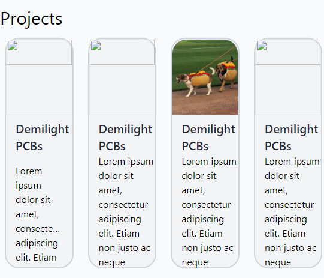
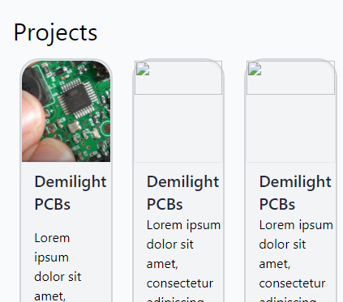
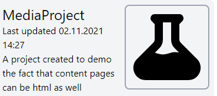
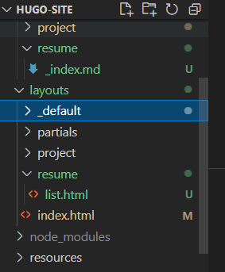
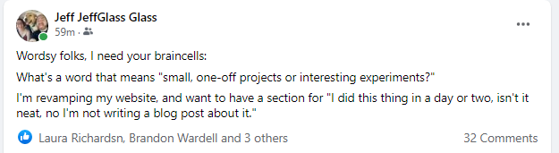

Refactoring the Site
At this point, I transitioned between a couple of different computers; in fact, I'm likely to be bouncing back and forth between two and even 3 computers over the course of this project. Thankfully, git, Github, and npm have my back here. When I sat down at a new computer tonight (with VS Code and my plugins already installed), I used git to clone my remote repo to my local machine. Then npm install brings down all my necessary node modules. A quick npx hugo (well, after making sure my file path had no spaces - a known error in POSTCSS) (and updating node to v 17.0.1 using npx) and we have our site rebuilt on a new machine. Well, almost:

Weirdly, only one of three project images appears on the main page. And the same "gooddogs.jpg" image is the only one that appears on the projects list-page. Curious... The gooddogs image is the one I'm currently using as a placeholder if the project content file doesn't specify a slug_image. If I change that standin, the standin images do appear in the projects page... and now two images appear on the main page! After using each image one-by-one as the standin slug_image, now all the images are appearing correctly... which implies to me that the images are not actually being correctly generated by Hugo, but instead are being cached between builds, leading to the appearance of correct behavior. Indeed, if I delete the public and resources folders are restart the server, we see a very similar issue with the image currently being used as the project standin:

Ah, I see here in the documentation that "assets will only be published if .Permalink or .RelPermalink is used." Which explains why I was only seeing the placeholder image - it was the only one reference via permalink in the summary.html renderer. Changing that image reference code to the following:
Worked, since all the images are reference via Permalink.
To help make things less confusing, I'm going to change the "image not found" image to something that's not an image I'm already using for something elsewhere - a nice SVG of a flash borrowed again from Heroicons.

To accomplish this, I added the SVG to a new /static/svg folder, then used a simple <img src="../../svg/notfound.svg" .... tag (with proper tailwind formatting) to use it as the slug_image not present option.
Ok, but actually on to refactoring the page now. I realize that what I've been creating is something between a resume page and a new actual homepage for my website, leaving it somewhat in limbo between the two. It's a bit odd to have job-history on the front page of a personal site, for example, but it should absolutely be on a resume page. So I'll create a new page that's strictly resume oriented, and refactor the index.html page into being a proper homepage.
So, I'll create a new file in my content called "/resume/resume.md", as well as a new file in my layouts folder called resume.html.html... except I can tell by poking at the content of these two files that resume.md is being used as the content within the default single.html template. So let's try this another way around - I'll create a /layouts/resume/_index.md file with frontmatter for my new resume page, and a layouts/resume/list.html file. That way, the {{site}}/resume URL points to the "list page for resumes"... which will just be my resume page. It seems like perhaps there'd be a better way to do this, but this certainly works.

I'll move the job history and skills list over from the main page to the resume page, and reformat the header to just link to the resume page. Since that header is included as a partial, it'll update everywhere at once. Oh and what the heck, I'll add a link to my twitter as well
Well that took about two minutes, most of which was finding the Twitter logo SVG on Ionicons. Awesome!
Much more tinkering occurred here, including a joyous crowdsourcing session to name the selection of small projects.

I learned some (but not all) about {{ range }} operator used to list pages, and that the summary layout can be distinct to each type of content (as well as having a default or fallback format, which is handy). So I created a small summary format for small projects, and embedded a few sample ones on the homepage. By using the {{ .RelPermalink }} template, each card on the homepage links to the appropriate piece of content.
lksdf